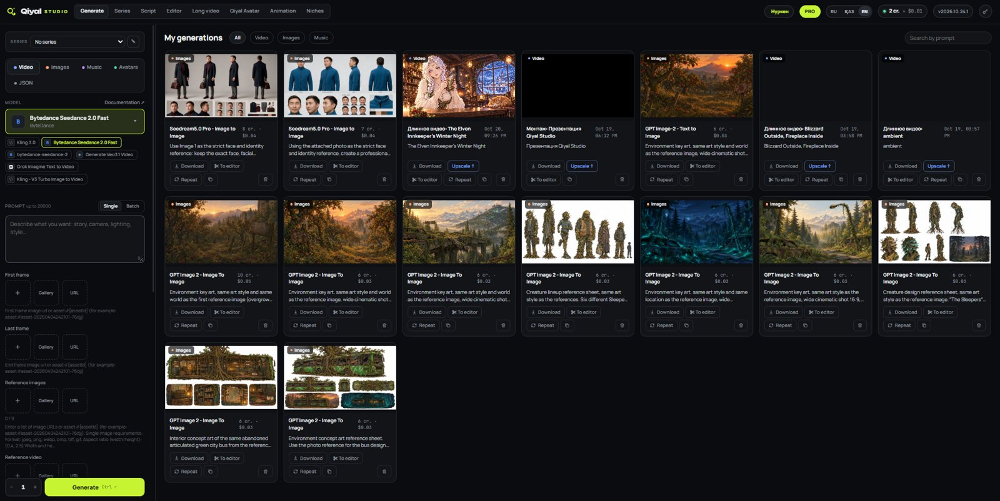
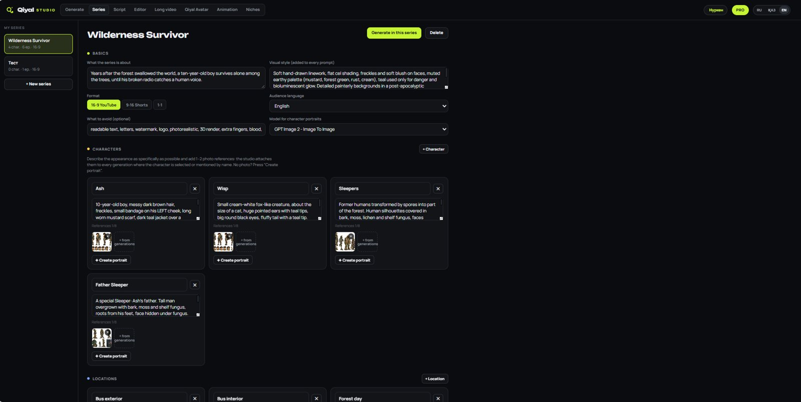
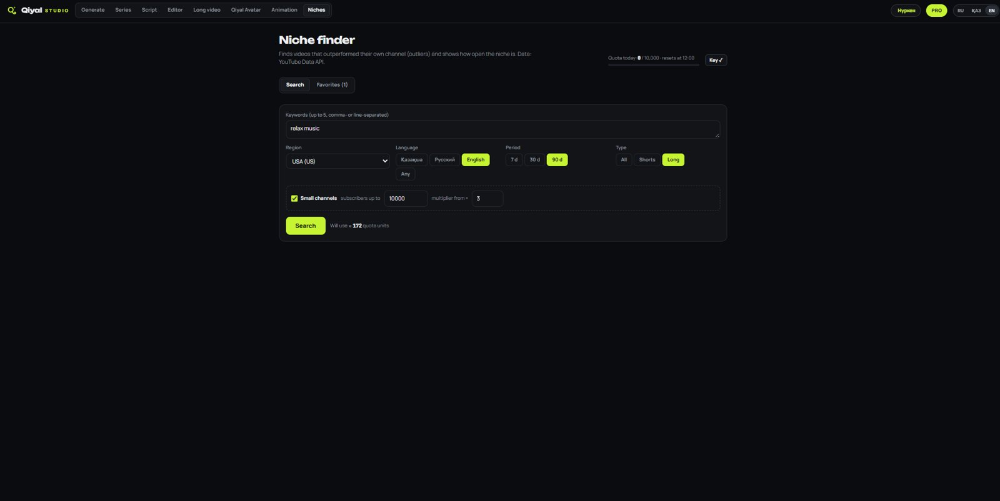
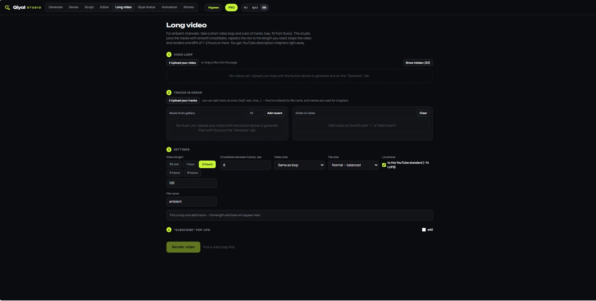

Niche Finder
Find videos that outperform their channel and see how open a niche is for newcomers.
Qiyal Studio brings niche research, AI images, video, music, voice-over, consistent characters, editing and hour-long videos into one desktop app — instead of ten tabs and five subscriptions.
Works with your own AI provider API key (kie.ai). You pay the provider directly for generations.
Find an idea, generate, assemble and export — without moving files between services.
Find videos that outperform their channel and see how open a niche is for newcomers.
Dozens of image, video and music models with forms in plain language. See the price before you generate.
Turn a photo into a presenter that speaks your text with lip-sync.
Define style, characters and locations once in a series passport. Heroes stay the same from shot to shot.
Write a script — the studio voices every line, draws a shot for each one and syncs them.
Animated intros, lower thirds, number facts and stickman explainers. Rendered on your computer, no credits spent.
Timeline, transitions, text, overlay layers, chroma key, masks, auto-subtitles and MP4 export.
A video loop plus tracks become a 1–2 hour video, with chapters for the YouTube description.
Connect the studio to Claude and ask it to generate, edit and assemble videos — with a spending limit per request.
Screenshots from the current version. The interface is available in English, Russian and Kazakh.




Qiyal runs on your computer. Your projects and keys stay with you.
Download the installer for Windows 10/11. Everything needed for video is included.
Paste your own kie.ai key. Generations are billed by the provider at their prices, and Qiyal shows the price before each run.
Generate, assemble and export finished videos. Unlock Pro with a license key whenever you need more.
Start free. Buy Pro once — or subscribe to get every new feature.
Windows 10/11 · 64-bit
| Lite | Pro | |
|---|---|---|
| Batch generation | — | ✓ |
| More than 1 series and 3 characters | — | ✓ |
| Scripts longer than 10 lines | — | ✓ |
| Redoing individual shots | — | ✓ |
| All transitions (Lite has 10 basic ones) | — | ✓ |
| Overlay layers | — | ✓ |
| Chroma key | — | ✓ |
| Masks | — | ✓ |
| Auto subtitles | — | ✓ |
| 4K export | — | ✓ |
| Video without watermark | — | ✓ |
| File size control | — | ✓ |
| Long video over 10 minutes | — | ✓ |
| “Subscribe” pop-ups | — | ✓ |
| Niche search without a daily limit | — | ✓ |
| Niche analysis | — | ✓ |
| Claude connection (MCP) | — | ✓ |
| Voice cleanup | — | ✓ |
| Custom animations by Claude | — | ✓ |
Yes. Qiyal uses your own API key from the AI provider (kie.ai), and generations are billed by the provider at their prices. Qiyal shows the price before each run. The Qiyal license covers the software only.
English, Russian and Kazakh. You can switch the language at any time in the top bar.
Lifetime is a one-time payment: you keep the Pro version that is current at purchase forever, without future updates. Subscription gives you Pro plus every update while it is active. You can move from Lifetime to Subscription at any time.
The app switches back to Lite. Your projects, series and files stay on your computer, and Pro unlocks again as soon as you renew.
Windows 10 or 11 (64-bit) and an internet connection for AI generation and license activation. Editing, animation and export run on your computer.
You do. Rights to AI-generated outputs are also subject to the terms of the AI provider and the specific model you use.
Yes — within 14 days of purchase. See the Refund Policy.
Yes. The warning appears for new apps that are not yet widely downloaded. Click More info → Run anyway. The installer is downloaded directly from our official GitHub page.
Download Lite for free. Upgrade when you are ready.